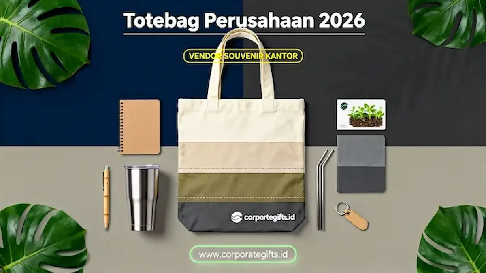

Corporate Gifts ID - Totebag perusahaan 2026 adalah tas jinjing reusable berbahan ramah lingkungan seperti kanvas premium, daur ulang poliester RPET, dan spunbond tebal yang berfungsi sebagai media promosi fisik sekaligus bukti nyata komitmen sustainability dan pilar ESG (Environmental, Social, and Governance) perusahaan. Karena dipakai berulang dalam mobilitas harian di ruang publik, logo korporat hadir secara konsisten di hadapan khalayak luas tanpa memerlukan biaya iklan berulang.
Merchandise ini kian diminati oleh divisi komunikasi korporat dan tim pengadaan karena memiliki bidang cetak (branding area) yang sangat luas. Hal ini memudahkan penempatan logo instansi, tagline kampanye, hingga QR code profil digital secara proporsional dibandingkan suvenir berdimensi kecil.
CorporateGifts.ID siap mendampingi kebutuhan pengadaan totebag custom perusahaan Anda dengan aneka opsi material bersertifikasi, variasi ketebalan kain, serta teknik kustomisasi berkualitas prima yang selaras dengan citra profesional brand.
Poin Kunci Totebag Perusahaan 2026:
- Relevansi ESG: Langsung mendukung narasi keberlanjutan dan kampanye pengurangan sampah kantong plastik sekali pakai.
- Eksposur Luas: Area permukaan yang lapang ideal untuk logo korporat, tagline inspiratif, hingga kode respons cepat (QR Code).
- Ragam Material Hijau: Didominasi oleh kanvas katun tebal, botol daur ulang RPET, spunbond padat 75-100 gsm, hingga kain denim daur ulang.
- Fleksibilitas Paket: Mudah dipadukan sebagai wadah seminar kit, starter pack onboarding, maupun bingkisan CSR komunitas.
- Estetika Minimalis: Mengadopsi palet warna earth tone dan tipografi bersih yang elegan guna memperkuat impresi mewah.
Mengapa Totebag Menjadi Merchandise Perusahaan Pilihan di 2026?
Totebag bertindak layaknya papan reklame berjalan (walking billboard) yang tampil alami di ruang publik setiap kali dibawa beraktivitas. Di saat yang sama, produk ini menjawab tuntutan pemangku kepentingan agar perusahaan membuktikan komitmen kepedulian lingkungan secara nyata, bukan sekadar janji tertulis dalam laporan tahunan.
Sinergi antara utilitas promosi jangka panjang dan pembuktian nilai ESG inilah yang menjadikan totebag jauh lebih diminati dibanding suvenir sekali pakai yang rentan berakhir di tempat pembuangan sampah.
Apakah Totebag Meningkatkan Visibilitas Brand Tanpa Biaya Tambahan?
Tentu saja. Totebag meningkatkan visibilitas merek tanpa biaya tambahan karena sering dipakai berulang dalam mobilitas harian penerima, mulai dari berbelanja, membawa laptop ke kantor, hingga bepergian saat akhir pekan.
Setiap kali tas digunakan di area publik, identitas visual brand kembali disaksikan oleh ratusan pasang mata di sekitarnya. Pengulangan visual yang terus berlanjut ini membentuk pengenalan merek (brand recall) yang kuat secara organik dan tahan lama.
Apakah Totebag Bisa Menjadi Bukti Nyata Komitmen ESG Perusahaan?
Ya, tas jinjing pakai ulang merupakan instrumen fisik paling konkret dalam mengampanyekan pengurangan sampah kantong plastik. Perusahaan yang giat melaporkan inisiatif hijau kini mengandalkan merchandise semacam ini untuk merangkul masyarakat.
Bagi publik dan mitra rekanan, pesan keberlanjutan jauh lebih mudah dipahami dan diapresiasi melalui barang nyata yang dapat mereka rasakan manfaatnya setiap hari.
Apa Tren Material dan Desain Totebag Perusahaan di 2026?
Tren totebag perusahaan modern berfokus pada eksplorasi serat ramah lingkungan bertekstur premium dengan sentuhan visual minimalis. Rincian material yang mendominasi meliputi:
- Kanvas Premium: Memberikan struktur yang kokoh, bertekstur tebal, dan sangat berkelas untuk paket cinderamata eksekutif.
- Polyester RPET: Dihasilkan dari proses daur ulang botol plastik bekas pakai, mendukung langsung kampanye ekonomi sirkular.
- Spunbond Premium (75-100 gsm): Serat non-woven yang higienis, ringan, serta sangat ekonomis untuk distribusi massal pada pameran akbar.
- Denim Recycle: Menghadirkan karakter visual kasual nan berkelas bagi korporasi yang ingin tampil beda dan atraktif.
- Cotton Recycle: Serat katun daur ulang tanpa pewarna kimia berlebih bagi perusahaan yang menargetkan sertifikasi hijau.
Bagaimana Gaya Desain yang Meningkatkan Kesan Premium?
Desain totebag yang memancarkan aura eksklusif masa kini umumnya menerapkan palet warna alami bumi (earth tone) seperti olive green, terracotta, navy, dan off-white. Penempatan logo dibuat proporsional dan tidak berlebihan, dipadukan dengan tipografi sans-serif modern yang rapi.
Sentuhan ilustrasi garis tipis (line art) kerap disematkan untuk memberikan sentuhan estetika kontemporer tanpa membuat tas terlihat penuh sesak, sehingga nama perusahaan tetap terbaca jelas dari kejauhan.

Kombinasi bahan kanvas organik dengan detail saku fungsional dan sablon presisi ramah lingkungan untuk seminar kit korporat.
Apa Saja Jenis Totebag Perusahaan yang Umum Dipesan?
Karakteristik tas yang dipesan senantiasa disesuaikan dengan kebutuhan agenda acara serta target penerima bingkisan:
| Jenis Totebag | Karakteristik Bahan & Bentuk | Paling Cocok Untuk |
|---|---|---|
| Kanvas Premium | Tebal, jahitan silang kokoh, memancarkan kesan eksklusif | Seminar kit direksi, executive gift set, merchandise kantor |
| Foldable Eco Bag | Ringkas, parasut/polyester tipis, dapat dilipat seukuran saku | Promosi massal, event lari santai, kampanye CSR belanja hijau |
| Spunbond Press / Jahit | Ringan, efisien biaya, variasi warna terlengkap | Pameran MICE, konferensi ribuan peserta, goodie bag umum |
| Pouch & Organizer Bag | Bentuk kompak, dilengkapi ritsleting penutup | Travel kit karyawan, wadah kabel gadget, toiletry bag |
| Denim Recycle | Tekstur unik serat jeans daur ulang, trendi dan kokoh | Industri kreatif, startup teknologi, komunitas muda |
Bagaimana Totebag Memperkuat Program Branding dan CSR Perusahaan?
Fleksibilitas penggunaan totebag menjadikannya media serbaguna di beragam agenda seremonial perusahaan:
- Wadah Seminar Kit Konferensi: Menyatukan binder agenda, pulpen grafir, dan botol minum ke dalam satu tas jinjing berkelas.
- Aksi Nyata CSR Lingkungan: Dibagikan kepada komunitas binaan atau pelanggan retail untuk mengampanyekan budaya tanpa kantong kresek.
- Hampers & Gift Set Akhir Tahun: Dikombinasikan harmonis dengan souvenir kantor seperti tumbler vakum, kalender meja, dan polo shirt berlogo.
- Starter Pack Karyawan Baru: Menjadi bagian paket onboarding yang menumbuhkan rasa bangga dan kepemilikan sejak hari pertama bergabung.
Apa yang Perlu Diperhatikan Tim Procurement Sebelum Memesan Totebag Custom?
Agar proses pengadaan berjalan lancar dan menghasilkan produk yang memenuhi ekspektasi manajemen, perhatikan daftar periksa berikut:
- Fungsi Beban dan Ukuran: Pastikan ukuran tas (misal 30x40 cm dengan lebar alas/gusset) mampu menampung laptop atau berkas map dokumen tanpa merusak jahitan tali.
- Ketepatan Format Berkas Logo: Sediakan master logo dalam format vektor (AI, EPS, atau SVG) guna menghindari hasil cetak sablon yang pecah atau buram.
- Seleksi Teknik Cetak: Pilih sablon manual berdaya rekat tinggi, cetak sublimasi full color, atau bordir komputer rapi sesuai karakter material tas.
- Alokasi Waktu Produksi: Diskusikan jadwal pengiriman sejak awal, terutama saat memesan dalam jumlah ribuan unit menjelang puncak musim acara perusahaan.
Pertanyaan Seputar Totebag Perusahaan 2026 (FAQ)
Kesimpulan
Totebag perusahaan 2026 tetap kokoh menempati posisi teratas merchandise korporat strategis karena berhasil menyatukan efektivitas promosi visual, fungsionalitas harian, dan pembuktian komitmen keberlanjutan lingkungan. Dengan memilih material yang tepat dan tata desain yang elegan, tas ini akan terus membawa nama baik perusahaan Anda di setiap langkah penggunanya.
Konsultasikan kebutuhan pembuatan tas jinjing ramah lingkungan perusahaan Anda bersama Corporate Gifts ID. Dapatkan penawaran harga pabrik terbaik dan layanan sampel fisik gratis.